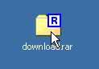
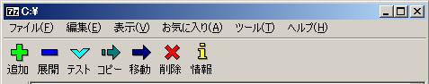
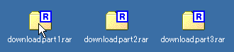
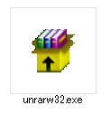

<!DOCTYPE html><html lang="ja"><head><meta charset="utf-8">
<meta name=viewport content="width=device-width, initial-scale=1">
<link rel="canonical" href="https://7-zip.opensource.jp/howto/rar-extract.html">
<title>rarファイルを解凍するには？ | 7-Zip</title>
<meta name="description" content="rarファイルの解凍方法を解説。rarファイルもzipや7zのファイルと同様の操作で展開・解凍が可能です。7-Zipではrar開発元ツールUnRARを同梱し、分割された圧縮ファイルも含めてさまざまな形式の圧縮ファイルの展開・解凍に対応しています。">
<link rel="stylesheet" type="text/css" href="https://7-zip.opensource.jp/style-howto.css">
</head><body>
<div id="body-inner">
<div id="sidebar">
<a href="https://7-zip.opensource.jp/" id="sitelogo"></a>
<hr>
<ul>
<li><a href="https://7-zip.opensource.jp/" class="MenuLink">ホーム</a>
<li><a href="https://7-zip.opensource.jp/7z.html" class="MenuLink">7zファイル</a>
<li><a href="https://7-zip.opensource.jp/sdk.html" class="MenuLink">LZMA SDK</a>
<li><a href="https://7-zip.opensource.jp/download.html" class="MenuLink">ダウンロード</a>
<li><a href="https://7-zip.opensource.jp/faq.html" class="MenuLink">FAQ</a>
<li><a href="https://7-zip.opensource.jp/support.html" class="MenuLink">サポート</a>
<li><a href="https://7-zip.opensource.jp/links.html" class="MenuLink">リンク</a>
</ul>
<hr>
<ul>
<li><a href="https://7-zip.opensource.jp/howto/">日本語howto</a>
<li><a href="https://7-zip.opensource.jp/chm/start.htm">ヘルプ</a>
</ul>
</div>
<div id="contents">
<h1>rarファイルの解凍</h1>
<p>
7-Zipではrar開発元のUnRARを同梱しており、rarファイルの解凍（展開）にも対応しています。
</p>
<h2>rarファイルの解凍方法</h2>
<p>
rarファイルの解凍はZIPファイルや7zファイルと同様の操作で行えます。rarファイルに7-Zipが関連付けされていれば、rarファイルをダブルクリックするだけで7-Zipで閲覧できます。
</p>

<p>
rarファイルをダブルクリックして7-Zipが起動したら、ファイルの中身を確認・選択して、「展開」ボタンで展開すれば完了です。
</p>

<p>
rarファイルが関連付けされていない場合も、7-Zipを起動してから7-Zip上でrarファイルが置かれているフォルダに移動し、該当のrarファイルを選択して（開いて）「展開」ボタンを押すだけです。
</p>
<h2>コマンドラインでのrarファイル解凍</h2>
<p>
コマンドラインでの解凍もzipファイルや7zファイルと同様です。「x」もしくは「e」コマンドで解凍します。
</p>
<pre>"C:\Program Files\7-Zip\7z.exe" x data.rar
</pre>
<p>
ファイル拡張子（ファイル名の末尾の.以降）が「rar」になっておらず、明示的にrar形式の解凍を行いたい場合は、「-t」オプションで圧縮形式を指定します。
</p>
<pre>"C:\Program Files\7-Zip\7z.exe" x -trar data
</pre>
<p>
拡張子がないもしくは間違っているファイルでも、通常は正しく自動判別されるので、このオプションの出番はないでしょう。
</p>
<h2>分割されたrarファイルを結合して解凍</h2>
<p>
～.part1.rar、～.part2.rar、～.part3.rarと分割されたrarファイルを開くには、分割されたすべてのrarファイルを同じフォルダに置いた状態で、1番目の～.part1.rarファイルをダブルクリックします。
</p>

<p>
7-Zipが起動し、それぞれのrarファイルが自動的に読み込まれて中身が表示されます。あとは「展開」ボタンを押して、任意のフォルダに展開（コピー）して完了です。
</p>
<p>
なお、分割されたrarファイルの一部が足りないと、その部分に格納されたファイルは取り出せません。～.part2.rarなどの先頭以外の断片を開いた状態でも、その断片だけに独立して入っている（ほかの断片にファイルの一部が含まれていない）ファイルであれば、そのファイルは取り出すことができます。
</p>
<a name="unrar-restrictions"></a>
<h2>UnRARについて</h2>
<p>
UnRARのソースコードは開発元で公開されていますが、独自ライセンスになっていますので、7-Zipではその部分だけライセンスが別のものになっています。
</p>
<pre>
    The decompression engine for RAR archives was developed using source 
    code of unRAR program.
    All copyrights to original unRAR code are owned by Alexander Roshal.

    The license for original unRAR code has the following restriction:

      The unRAR sources cannot be used to re-create the RAR compression algorithm, 
      which is proprietary. Distribution of modified unRAR sources in separate form 
      or as a part of other software is permitted, provided that it is clearly
      stated in the documentation and source comments that the code may
      not be used to develop a RAR (WinRAR) compatible archiver.
</pre>
<p>
7-Zipでは、rarファイルの解凍にはRAR開発元のソフトウェアで対応していますが、圧縮は行えません。rarファイルの圧縮が行えるのは、開発元ツールのWinRAR（有償）のみです。フリーのツールではrar圧縮できるものはありません。
</p>
<h2>RAR 5.0の圧縮ファイルに対応するには</h2>
<p>
もし任意のrarファイルが解凍できない場合は、そのRARファイルがRAR5.0形式の可能性もあります。最新のRAR5.0の圧縮ファイルを解凍するには、7-Zip 15.06 beta以降が必要になります。
</p>
<p>
もしくは、RAR5.0に対応したUnRAR for Windowsが必要になります。UnRARは、以下の開発元URLからダウンロードできます。
</p>
<p>
http://www.rarlab.com/rar_add.htm
</p>

<p>
（フォーマット解説も「RAR 5.0 archive format」のところから閲覧できます）
</p>
<p>
このページにアクセスしたら、「UnRAR for Windows」のところをクリックします。するとunrarw32.exeがダウンロードできるのでこれを実行し、インストールします。インストールといっても単にC:\Program Files (x86)\Unrarにコマンドとテキストが置かれるだけです。
</p>
 <span>（このアイコンのファイルがダウンロードされるのでダブルクリックして実行。プログラム互換性アシスタントのワーニングが表示されますが、正しくインストールできたとして終了すれば問題ありません。）</span>
<p>
インストールできたらコマンドプロンプトからUnRAR.exeを実行します。
</p>
<pre>
> <strong>"C:\Program Files (x86)\Unrar\UnRAR.exe"</strong>

UNRAR 5.00 freeware      Copyright (c) 1993-2013 Alexander Roshal

Usage:     unrar <command> -<switch 1> -<switch N> <archive> <files...>
               <@listfiles...> <path_to_extract\>

<Commands>
  e             Extract files without archived paths
  l[t[a],b]     List archive contents [technical[all], bare]
  p             Print file to stdout
  t             Test archive files
  v[t[a],b]     Verbosely list archive contents [technical[all],bare]
  x             Extract files with full path
	:
	:
</pre>
<p>
書式は上記同様にパス付き解凍の場合はxをパスなし解凍の場合はeをつけて実行します。
</p>
<pre>
> <strong>"C:\Program Files (x86)\Unrar\UnRAR.exe" x dara.rar</strong>
</pre>
<p>
上記ページには、Windows版以外にも各種OS向けのUnRARが用意されているので、これらを使えばたいていの環境でRARの解凍が行えます。
</p>
<hr>
<p><small>OSDN Project</small></p> 
</div>
</div>
</body></html>

